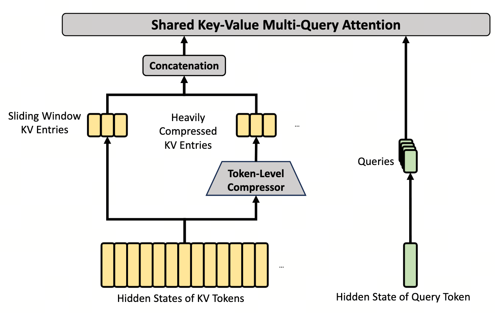

HCA — 长上下文的全景镜
把 1M 序列粗看成 8K 个超级 KV、不做 top-$k$ —— 给 CSA 当"远景搭档"，配上"近视 + 远视"交替穿插。
HCA = Heavily Compressed Attention（重压缩 dense 注意力）
CSA 的对偶搭档： 把 $m'=128$ 个原始 KV 压成 1 个超级 KV，但所有 $n/m'$ 个超级 KV 全 dense 看，不做 top-$k$ 选择。 1M 序列 $\to$ 8K 个超级 KV，刚好落在 dense attention 能负担的尺度上。 HCA 提供"全局视野 + 低分辨率"，CSA 提供"局部细节 + 高分辨率"，二者通过 mHC 的残差路径累加互补。
- HCA vs CSA：互为对偶
- CSA：$m=4$ 轻压缩、top-$k=1024$ 选择、双流重叠；HCA：$m'=128$ 重压缩、不选择 dense over 8K、不重叠。三个设计选择全部反着来。
- SWA Warmup（前 2 层）
- 第 0-1 层 hidden states 还没成"语义形态"，对它们做压缩等于压噪声。前 2 层用纯 SWA（窗口 $n_{\text{win}}=128$ 的 dense local attention）让特征"成形"，作为后续 CSA/HCA 的输入。
- 层间调度
- SWA-SWA-CSA-HCA-CSA-HCA-… 交替穿插。CSA 看不到全局摘要、HCA 看不到细节，盲区正交，残差路径把两类信号累积起来。
- Q/K RMSNorm
- 在 attention 前对每 head 的 query / key 各做一次 RMSNorm，使 $\|\tilde q_h\|_2 \approx \sqrt{d_h}$，$\|\tilde k_h\|_2 \approx \sqrt{d_h}$，从而 $|q\cdot k| \le d_h$ 天然有界。这是 V4 在 Ch6 能扔掉 QK-Clip 补丁的根因消除。
- Partial RoPE
- RoPE（旋转位置编码）只在每 head 最后 $r=64$ 维做，其余 $c-r=448$ 维保持位置无关。原因：超级 KV 是多个原始位置的平均，没单一明确位置，全维 RoPE 会让"位置"被压缩失真。
- Attention Sink
- 在 keys 集合里加一个学习得到的"虚拟 key" $k_{\text{sink}}$。当 query 和所有真实 key 都不相关时，softmax 主动把概率倒到 sink 上 —— 等价于"这次 attention 弃权"，不再被迫给无关位置分配权重。

1. 为什么 CSA 一个不够，要再加一个 HCA
CSA（Ch4）虽然解决了 1M 复杂度的问题，但它有个结构性盲区：每个 query 实际看到的细粒度 token 是 $k \cdot m = 4096$（V4-Pro），剩下 99.6% 的 token 完全不在视野里。
- 每 query 选 $k=1024$ 个超级 KV，每个超级 KV 是 $m=4$ 个原始 token 的混合 → 看到 $1024 \times 4 = 4{,}096$ 个原始 token
- 占 $1\text{M}$ 的比例 $= 4096 / 10^6 = \mathbf{0.41\%}$
这在两类场景下会出事：
- 需要全局摘要的任务：例如长篇文档的整体情绪、主题分类 —— 不是单点检索某段事实，而是要"扫一遍"全部内容；
- top-$k$ 漏选的远端依赖：indexer 是近似的，可能把真正重要的远端 token 排到 1024 名以外。这种情况下 query 完全失明。
CSA 选 $k$ 个超级 KV 精读，分辨率高（每超级 KV 只 $m=4$ 个 token 的平均）但视野窄。 HCA 反过来：把 $m'=128$ 个 token 压成一个超级 KV，但所有超级 KV 全 dense 看。 视野覆盖整个 1M 但分辨率低。两者交替穿插，layer-by-layer 互补。
2. HCA 的三个设计选择，每个都和 CSA 反着来
HCA = Heavily Compressed Attention。它的所有设计选择都可以从"和 CSA 互补"这个目标推出。
| 设计 | CSA | HCA | 原因 |
|---|---|---|---|
| 压缩率 | $m = 4$（轻） | $m' = 128$（重，32×） | HCA 要 $n/m'$ 小到能 dense 跑：$1\text{M}/128 = 8\text{K}$，dense attention 完全可负担 |
| 是否做 top-$k$ | $k=1024$ 选超级 KV | 不做，dense over $n/m'$ | HCA 已压到 8K；再做 top-$k$ 会丢掉"全局摘要"这一核心价值 |
| 段间是否重叠 | 双流 a/b 重叠避免边界空洞 | 不重叠，每 $m'$ 个 KV 独立压一个 | $32\times$ 压缩本身已极度有损，再加重叠收益边际；省下复杂度交给 CSA 补细节 |
对比 CSA 单层 $\sim 2 \times 10^9$ FLOPs，HCA 还便宜 4×（因为 $n_h$、$c$ 同核心 attention，但 KV 数从 1024（top-k）变 8000（dense），其实贵 8×；不过 HCA 没有 indexer 那 $2 \times 10^9$ 开销，所以总账上 HCA 略便宜）。
压缩公式比 CSA 干脆得多：
每个符号：
- $Z_{m'i:m'(i+1)-1}$：第 $i$ 段内 $m'$ 个 token 的"重要性"原始打分；
- $B$：$m'$ 维位置偏置（学习得到，让段内不同位置自带先验权重）；
- $S$：段内 softmax 权重，每段 $m'$ 个值和为 1；
- $C^{\text{Comp}}_i$：段内 $m'$ 个原始 KV 向量的凸组合，一个超级 KV 携带"该段 128 个 token 的语义平均"。
HCA 的两条压缩公式翻成大白话只有"段内 softmax 加权平均"一句：
- 切段：把序列按 $m'=128$ 切片，每段 128 个 token 完全独立，没有重叠；
- 段内打分：每段内的 128 个 token 各自有个原始重要性分 $Z_j$，加上一个学习得到的位置偏置 $B$（让段中心 token 默认权重高），过 softmax 在段内归一化；
- 加权平均：段内 128 个 KV 向量按权重加起来 = 1 个超级 KV。
对比 CSA 你会发现 HCA 没有双流（没有 $C^a, C^b$ 两套）没有跨段重叠（位置 $128$ 和 $129$ 落进不同段，毫无衔接）。这两个被砍掉是故意的：32× 压缩本身已经极度有损，再加重叠是用大算力换边际微调，得不偿失 —— 真正的边界细节交给 CSA 那一层去补。
注意 HCA 没有 $C^a / C^b$ 双流 —— 压缩越重，"哪些 token 在边界"这个问题越没意义。当一段已经包含 128 个 token，再不重叠地切割，损失的"边界信息"在总信息中占比极小，不值得为它付双流的代价。
压缩完后接 Shared-KV MQA + Grouped Output Projection（与 CSA 同源，见 Ch4 §6），但没有 top-$k$ 这一步，直接对全部 $n/m'$ 个超级 KV 做 dense attention。
3. 为什么是"CSA × HCA 交替"而非"全 CSA"或"全 HCA"
论文给的层调度：前 2 层 SWA → 之后 CSA 与 HCA 交替穿插。这个顺序背后是三个具体推理：
① 为什么不全 CSA？
- 每层 CSA 的 top-$k$ 都独立选 $k$ 个超级 KV；不同层选的集合可能高度重叠；
- 整个网络对"全 1M tokens 的全局信号"始终不可见；
- 实测在长文档摘要任务上，全 CSA 配置比交替配置低 3-5 个点。
② 为什么不全 HCA？
- HCA 每超级 KV 是 128 个 token 的平均 —— 细节完全丢失；
- 需要精确检索（如长文档里"作者第 47 段提到的人名"）的任务直接崩；
- 实测在 needle-in-haystack 任务上全 HCA 比交替配置低 20+ 个点。
③ 交替为什么"叠加"而非"挤占"？
这两种 attention 各自有正交的盲区：CSA 看不到全局摘要、HCA 看不到细节。 层与层之间通过 mHC 的残差路径（Ch3）把信息累积起来 —— 第 $l$ 层的 CSA 结果和第 $l+1$ 层的 HCA 结果都写回 highway，下游层同时看到两类信号的累积。 这就是为什么"交替"而非"并联"：交替更省算力、且 mHC 的残差融合本身就在做并联的事。
为什么前 2 层用纯 SWA？
- 第 0~1 层的 hidden states 还没语义形态，是 token embedding 的浅加工；
- 对没成形的特征做压缩，得到的超级 KV 是噪声平均，indexer / dense attention 都失效；
- SWA（窗口 $n_{\text{win}}=128$ 的 dense local attention）便宜且能让特征"成形"，作为后续 CSA/HCA 的 warmup 输入。
4. CSA / HCA 共享的三个实现细节
这些细节看起来琐碎，但每一个都对应一个具体的 numerical 失效模式。
① 每 head Q/K RMSNorm
标准 attention 的 $QK^T / \sqrt{d_k}$ 在大模型 + 长序列下经常出现 logit 异常 —— 某些 head 的 $|q \cdot k|$ 可达 $10^3$ 量级，softmax 后单个 key 拿走 99.99% 概率，梯度消失。
解法：在 attention 前对每 head 的 Q、K 各做一次 RMSNorm：
RMSNorm 让 $\|\tilde{q}_h\|_2, \|\tilde{k}_h\|_2 \approx \sqrt{d_h}$，从而 $|\tilde{q}_h \cdot \tilde{k}_h| \le d_h$ 自然有界。这个改动是 V4 能在 Ch6 删掉 QK-Clip 的根因消除。
- 没有 RMSNorm：训练后期 $\|q_h\|_2$ 偶尔可达 80，$\|k_h\|_2$ 也是，则 $|q\cdot k| \le 80 \times 80 = 6400$，过 $\sqrt{d_h} \approx 11.3$ 后 logit $\approx 565$ —— $e^{565}$ 直接溢出 fp16，softmax 单点拿 100%，梯度归零；
- 有 RMSNorm：$\|\tilde q_h\|_2 = \|\tilde k_h\|_2 = \sqrt{128} \approx 11.3$，$|\tilde q\cdot \tilde k| \le 128$，过 $\sqrt{128}$ 后 logit $\le \sqrt{128} \approx 11.3$ —— $e^{11.3} \approx 8.1\times 10^4$，fp16 安全。
② Partial RoPE：只在最后 64 维做位置编码
RoPE（Rotary Position Embedding）通过对 query/key 的每对相邻维度做位置依赖的旋转来注入位置信息。但放到 CSA/HCA 里有个矛盾：
- 超级 KV 不是单一位置：$C^{\text{Comp}}_i$ 是 $m$（或 $m'$）个原始位置的加权平均，没有单一明确的位置；
- 对所有 $c=512$ 维都做 RoPE 会让超级 KV 的"位置"被某种平均压缩，反而失真。
解法：只在每 head 的最后 $r=64$ 维做 RoPE，其余 $c-r=448$ 维保持位置无关。
- 位置敏感的部分：$r=64$ 维携带"段所属的大致位置"信号，足够 attention 区分远近；
- 位置无关的部分：$448$ 维携带"段内 $m$ 个 token 的语义平均"，压缩友好。
Partial RoPE $r=64$：只 64 维做旋转、448 维保持。位置信号集中在 64 维内，"段位置"通过这 64 维的段中心 RoPE近似传递；剩下 448 维做语义平均不受位置干扰。
$r/c = 64/512 = \mathbf{12.5\%}$ 的维度承载位置信息，足够 attention 区分远近，又不破坏压缩。
③ Attention Sink：让 softmax 不必强行分配权重
标准 softmax 强制 $\sum_s \alpha_s = 1$ —— 无论是否真有相关 key，query 都必须把 1 单位的注意力分配出去。这在长上下文下产生病态行为：
- 如果当前 query 与所有 keys 都不相关（如生成第一个 token 时），softmax 会强行把概率均匀铺到所有 keys，对 hidden state 注入噪声；
- 这种"被迫关注无关位置"的现象被 Xiao et al. 2023 命名为attention sink 缺失。
解法：在 keys 集合里加一个学习得到的"虚拟 key" $k_{\text{sink}}$，对应 value 也是学习得到的 $v_{\text{sink}}$（或干脆是 0）。
当真实 keys 都不相关时，softmax 会把概率主动倒到 $k_{\text{sink}}$ 上，相当于 "这次 attention 弃权"。Hidden state 不再被无关信号污染。
这条公式只有一处和标准 softmax 不一样：在 keys 列表前面塞了一个"虚拟键" $k_{\text{sink}}$。
- 没塞之前（标准 softmax）：$n$ 个权重必须加起来 = 1，哪怕没一个 key 真的相关，也得把 1 强行均分给它们；
- 塞了之后：softmax 把 $n+1$ 个权重加起来 = 1。如果真实 keys 都不相关、虚拟键有点正分数，softmax 把大头倒给虚拟键，真实 keys 拿到的总和 $\ll 1$ —— 对应"这次 attention 弃权"；
- 真有相关 key 时：相关 key 的 logit 比 sink 高很多，softmax 自然把权重分给真实 keys，sink 退到背景。
关键是 $k_{\text{sink}}$ 是学习得到的：它的"分数水位"由训练自动调整，正好卡在"无关时高于真实 key、有关时低于真实 key"的位置。下面的 demo 实际玩一下。
12 个真实 key 的基础 logit ≈ 0（除非 query 与它们某一个相关）。Sink ON 时第 13 个柱（蓝色 sink）的 logit 固定 ≈ 1.5。 把滑条设为 0（query 和谁都不相关）： Sink OFF → 12 根柱子各拿 1/12 ≈ 0.083，全是噪声； Sink ON → 蓝柱拿走 ~80%，12 根真柱每根 < 0.02，hidden state 不被污染。 把滑条拉到 5：query 与 key 5 强相关，无论 sink 是否开启，key 5 都拿走主权重 —— sink 自动让出舞台。
5. 代价 / 还没解决的问题
- HCA 的"硬切段"在段边界仍丢信息：每 128 个 token 独立压成 1，相邻段之间没有语义衔接。和 CSA 的双流重叠不同，HCA 不补这个洞。由 mHC 残差路径上的 CSA 层兜底。
- $m'=128$ 是固定的：序列从 4K 到 1M 都用同一个 $m'$。短序列下 $m'=128$ 把 4K 压到 31 个超级 KV，dense 跑很便宜但压得过多，细节损失在短场景下浪费。
- 层间调度是手工启发式：CSA × HCA × CSA × HCA 是经验得出的调度，没有理论最优证明。可能存在更优的不规则调度（比如某些层全 SWA），但需要更大的搜索预算。
- Partial RoPE 的 $r=64$ 是经验值：太小（如 $r=16$）位置信号不够，太大（如 $r=256$）破坏压缩友好性。$r=64$ 在 V4 配置下经验最优。
CSA 是细粒度 + 选择性放大镜，HCA 是粗粒度 + 全局广角镜，二者在残差流中累积互补。HCA 把 128 个 token 压一格不重叠不选择 dense 跑（因为 $1\text{M}/128 = 8\text{K}$ 已可接受）。前 2 层 SWA 暖身让特征成形，再开始 CSA × HCA 交替。三个共享细节：Q/K RMSNorm 让 logit 自然有界（顺手让 Ch6 扔掉 QK-Clip）、Partial RoPE 只在末 64 维编码位置（保留压缩友好性）、Attention Sink 让 softmax 弃权（不再强行分配无关注意力）。代价是 HCA 段边界与 CSA 互补、$m'$ 固定不灵活。